Databricks common issues
About
Purpose
This page is a list of common errors that have been encountered while using Databricks, known issues, and any fixes we have for them. If you come across an issue that does not feature here please consider emailing the Statistics Development Team: statistics.development@education.gov.uk.
Layout
At the top of the page you will find the most current issue, this is used when we get a lot of users all reporting the same issue at the same time.
There are also several other drop-downs partitioning issues into the following categories:
Installing
Navigating
Connecting
Using
SQL migration
Current Issues: No known current issues.
Installation
No Simba Spark ODBC Driver
Issue
When you download Simba Spark it doesn’t necessarily download the data driver. This sometimes occurs silently or you can get the following error:
Error in DBI::dbConnect():! Failed to automatically find the Databricks/Spark ODBC driver.ℹ Set driver to known driver name or path.Run rlang::last_trace() to see where the error occurred.
Note the Simba Spark ODBC Driver has been replaced by the Databricks ODBC Driver, this may have resolved the above issue.
Resolution
Raise an I.T. ticket explaining that you have installed “Simba Spark” but the driver is missing, they will download it from the internet.
Virtual environments
Issue
Sometimes R will tell you to install pysparklyr and rerun, then when doing that it sets up a Python venv r-sparklyr-databricks-15.4 on your Onedrive, then it tries to install databricks-connect in the venv but exits with an error distutils.errors.DistutilsPlatformError: Microsoft Visual C++ 14.0 or greater is required. Get it with “Microsoft C++ Build Tools”: https://visualstudio.microsoft.com/visual-cpp-build-tools/
Resolution
Step 1
You can change the default location for virtual environments using the WORKON_HOME setting.
You can specify the default folder for new virtual environments in the .Renvironfile by using the variable WORKON_HOME (e.g. WORKON_HOME = “C:/users/myusername” ) to do this: 1. Open your .Renviron file
#| usethis::edit_r_environ()Add or update the line:
WORKON_HOME = "C:/users/myusername"Save the file and restart R
Step 2
Set-up your databricks follow the instructions at Set up Databricks personal compute cluster with RStudio – Analysts’ Guide and get to the point of connecting with:
#| sc <- spark_connect(
#| cluster_id = Sys.getenv("DATABRICKS_CLUSTER_PATH"),
#| method = "databricks_connect",
#|)Install pysparklyr if it tells you to do that and try again. Eventually you will probably get a message saying it needs to install a new virtual environment with databricks-connect, and it will now make this in the new folder you specified in WORKON_HOME. If that goes without a hitch, then great, you’re done.
Step 3
Fix C++ build error
If you still get a Microsoft C++ build tools error, you can install databricks-connect manually in binary mode.
Go (in windows explorer) to the Scripts subfolder in the new virtual environment folder you just made(probably something like C:sparklyr-databricks-15.4)
Right-click in the files pane and do “Open in terminal” which will open up Powershell, and in Powershell do .-m pip install databricks-connect.
This should work to install, after which the spark-connect command should work in R.
User interface
I can’t find my catalog?
Issue
Data appears to be missing when you search around Databricks for it.
Resolution
There can be many different reasons but first it’s important to check you are in the right space.
- First click on the dropdown (open image in new tab if too small):
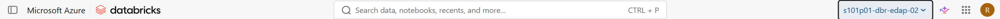
- Navigating the dropdown:
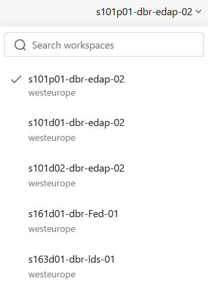
- When you click on a different workspace, it appears at the top the next time you click-on the dropdown, the rest are alphabetical:
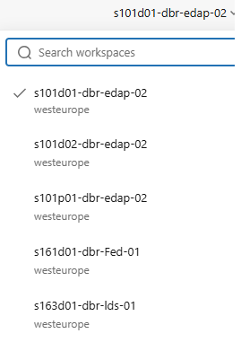
You can find a full list of dropdowns here: Analysts’ Guide Workspace list
and you can find information about workspaces here: Analysts’ Guide Workspace guidance or Databricks’ Workspace guidance.
- Then check you can find the catalog in the catalog dropdown found here:
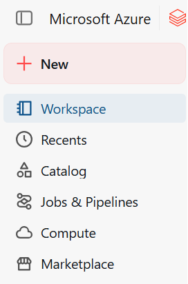
- and it should look like this:
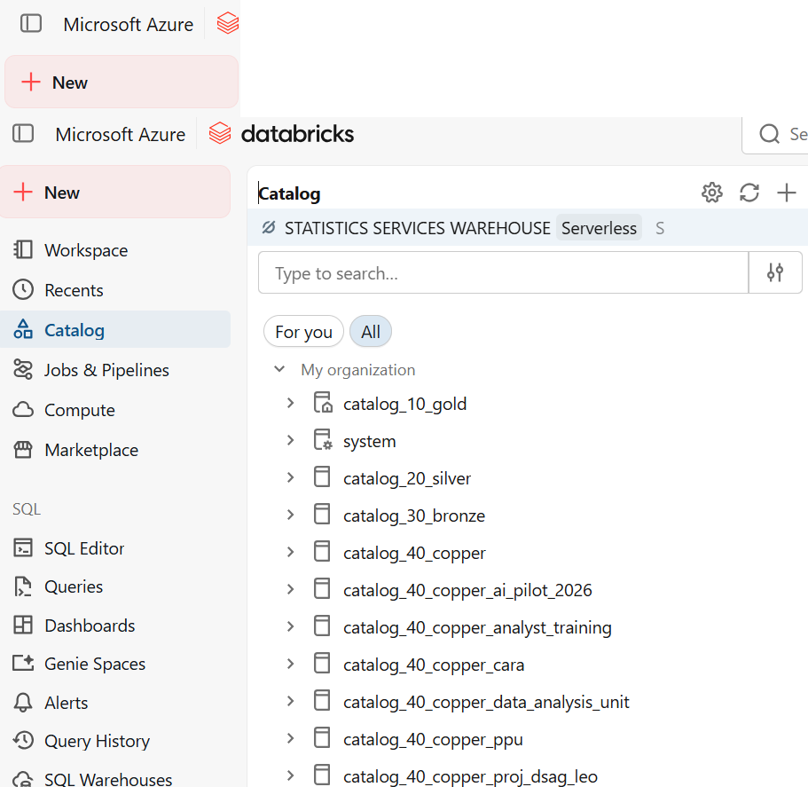
Databricks account
Account removed or gone inactive
Issue
You no longer have access to Databricks due to either your account being removed or having gone inactive.
Resolution
Go to the CIP request form
Click: Request type = “Select Azure Portal and DevOps User Account Request”
If you have never requested an account before click add details and fill out the form.
Otherwise click modify and explain that the account has gone dormant.
Personal Access Tokens
Creating a personal access token
Issue
You want to connect to Databricks through the use of a personal access token but don’t know how.
Resolution
You can find guidance on personal access tokens in the Analysts’ Guide and in the Databricks’ guidance.
- Find settings button after clicking your profile icon:
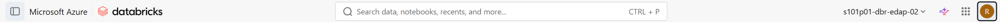
- Navigate to settings:
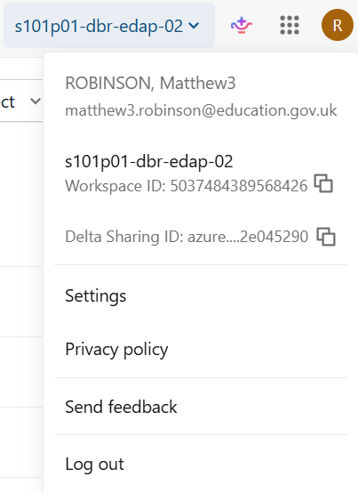
- Click developer:
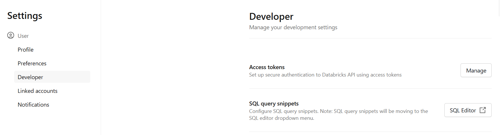
- Set-up token:
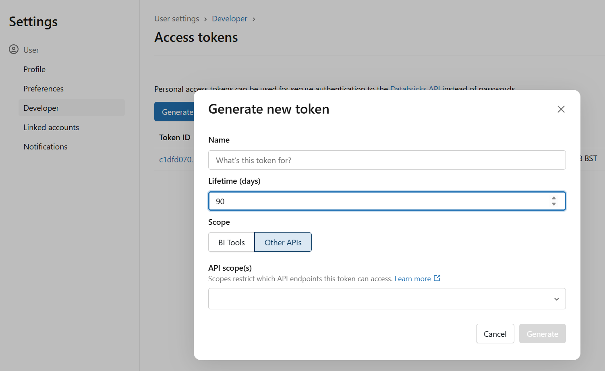
Make sure that the personal access token has the “API scope” to do what you want.
ODBC failed to connect with authentication error
Issue
You are getting the following error:
Error in DBI::dbConnect(): ! ODBC failed with error 28000 from [Simba][ThriftExtension]. ✖ (8) Authentication/authorization error occurred. Error details: Bad status with no error message: Unauthorized/Forbidden
Resolution
Often this is due to your PAT token not having the right permissions or having expired in which case follow the guidance in Creating a personal access token
Other reasons for this error could be either that you do not currently have permission to do what you want with the Catalog, or sometimes a typo in the catalog, databricks host, or warehouse id, guidance can be found in the Analysts’ Guide Databricks connection guidance.
Other applications
PowerBI connection issue
Issue
PowerBI is not connecting to Databricks
Resolution
Make sure you are on an up-to-date version of PowerBI or it can struggle to connect.
Common issues using the databricks platform
Databricks computes
Issue
I don’t know what to do with Computes?
Resolution
Databricks compute – what compute should I be using? You can find our guidance here Analysts’ Guide Computes and Databricks’ guidance: compute
Using R in notebooks
Issue
R isn’t working in my notebook Or I am getting the following error: Your administrator has only allowed sql and python and scala commands on this cluster. This execution contained at least one disallowed language.
Resolution
Quick guide to using R in notebooks:
- First you should be getting something like the following error:
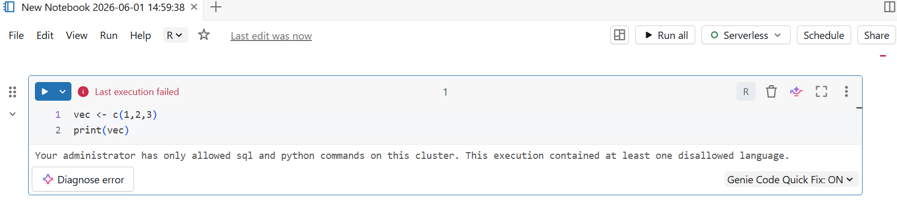
- Create a new personal compute instance:
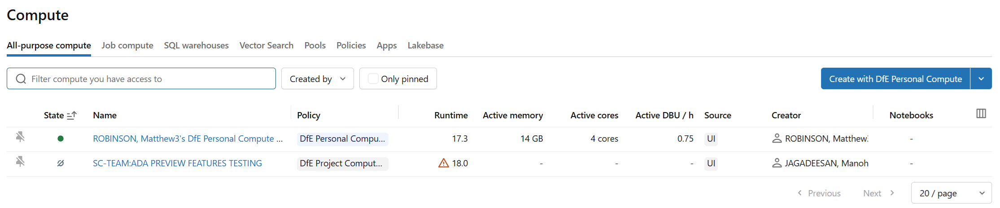
- Make sure to set the access mode to a form that includes R as a language:
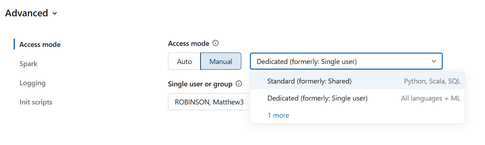
- Swap to your personal compute:
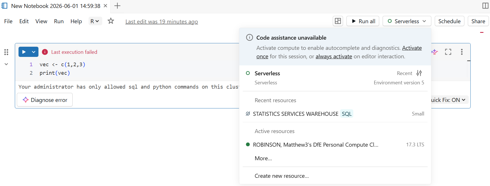
- Click through:
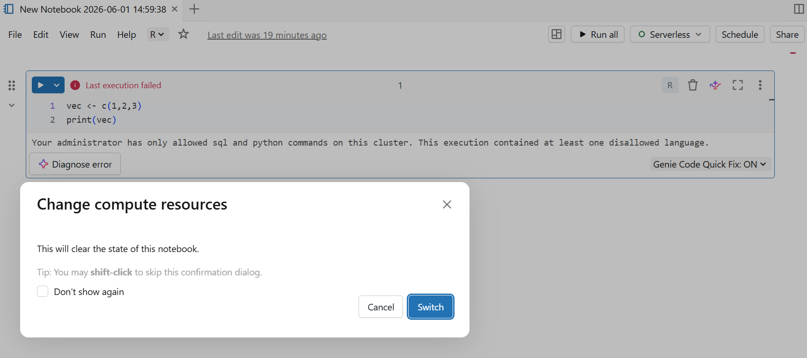
- It should run:
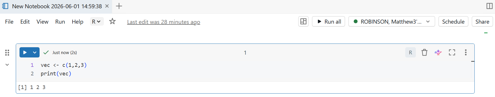
Issues with temporary tables
Issue
I can’t use a temporary table
Resolution
Temporary tables do not work for Databricks runtimes before 18.1, Databricks temporary table guidance.
Understanding Tables vs Volumes
Issue
It is common to confuse volumes and tables when working in Databricks. If you try to refer to a volume in the same way you would a table, you may see SQL queries fail, or you may find you are unable to query files in a volume in the way you expect.
Resolution
Tables store structured data and can be queried directly through SQL. Volumes, however, are designed for file-based (unstuctured or semi-structured) storage and are not directly accessible via standard SQL queries.
To access data in a volume, you must use the appropriate file path rather than SQL table references. You can find guidance on the differences on the Databricks’ guidance: volumes and Databricks’ guidance: volume paths.
Issue
I am getting the following error:
Error: nanodbc/nanodbc.cpp:3648: HY000
[Databricks][Hardy] (35) Error from server: error code: ‘0’ error message: ‘[Databricks][Hardy] (134) File d6217fa8-e93e-49f6-9a7c-25a12d523025: A retriable error occurred while attempting to download a result file from the cloud store but the retry limit had been exceeded. Error Detail: File d6217fa8-e93e-49f6-9a7c-25a12d523025: An error had occurred while attempting to download the result file.The error is: Could not connect to server. Since the connection has been configured to consider all result file download as retriable errors, we will attempt to retry the download.’.
Resolution
The way to fix this error is to set MaxErrorRetry = 0, often setting native query and enabling query result downloads helps.
Splink
Issue
Some data manipulation with PySpark dataframes don’t work, for example you may encounter difficulty using Splink.
Resolution
Here is an example of how to get around that using PySpark: Splint in PySpark.
Using packages requiring system packages
Issue
You want to use a package that requires system packages.
Resolution
We recommend doing this by using a notebook and following the Databricks’ guidance on using libraries in r.
In general you might want to either convert the PySpark dataframe to a more manageable object: Pandas In spark and R you can use the collect() function.
I hate Mondays
Issue
Databricks’s weeks start on a Sunday, often you’d rather they’d start on a Monday, this issue is where you can’t change the starting day of the week away from Sunday.
Resolution
You can’t change the starting day of the week away from Sunday, there is not resolution, Databricks hates starting the week on anyday but Sunday.
Package issues
Issue
Spark updates its packages causing our pipelines to break.
Resolution
Roll back the version.
You can check the package version using:
or
Rolling back a version requires first:
- Removing the package.
- Re-installing the package specifying the version using your installation method of preference.
Normally this would be:
Timezones
Issue
You want to use a different timezone.
Resolution
Follow this guidance: Databricks timezones.
Pushing up CSV files
Issue
Special characters in CSV files can cause issues on upload.
Resolution
Saving the csv file in UTF-8 encoding (Databricks uses this) should solve the issue.
Memory issues
Issue
Large dataframes can cause issues with Spark.
Resolution
To get around this you can:
- use rm() and gc() to clear up as much memory as you can, removing objects you no longer need
- use a double-size cluster (you can set which cluster type if you’re using a personal cluster)
- use smaller objects (e.g. not copying all columns of a data table if you don’t need them all, or selecting a subset before you collect)
Common issues with SQL code
Can’t write table to Databricks when you can connect
Issue
Sometimes writing a table to Databricks fails.
Resolution
We recommend using the dfeR package and the write_df_to_delta() function.
If this does not work there are a few different kinds of errors that might prevent a table from writing to a database.
NAN error
If your table contains NANs, Databricks won’t know how to process this.
Old code not working
Issue
Your SQL code that was working pre-migration is no longer working.
Resolution
Databricks and SQL Server use different versions of SQL (Databricks uses Spark SQL), which function slightly differently. There are several different reasons why your SQL Server code might not work on Databricks.
Case-sensitivity
SQL in Databricks is case sensitive, whereas mySQL is not, consider using upper / lower to test.
Spaces
SQL in Databricks doesn’t automatically trim spaces.
Terminology
Databricks doesn’t use the same commands as SQL Server, for example SELECT TOP 1 … becomes SELECT … LIMIT 1, and SELECT DISTINCT Variable ... becomes SELECT DISTINCT(Variable) ...
Databrick’s commentary
Data type differences:
- NVARCHAR, VARCHAR(MAX), INT → Spark uses STRING, INT, BIGINT, DOUBLE
- BIT → doesn’t exist; use BOOLEAN
- DATETIME → use TIMESTAMP
Syntax changes:
- ISNULL(x, y) → COALESCE(x, y)
- TOP N → LIMIT N (at end of query)
- CAST(x AS NVARCHAR) → CAST(x AS STRING)
- Square bracket identifiers [column] → backticks
column - for string concatenation → CONCAT() or ||
- GETDATE() → CURRENT_TIMESTAMP() DATEADD, DATEDIFF → DATE_ADD, DATEDIFF
Procedural code:
- IF…ELSE, WHILE, BEGIN…END blocks → not supported in Spark SQL
- DECLARE @variable → use widgets (:parameter) or CTEs
- Stored procedures behave differently — need SQL SECURITY INVOKER on DBR 17.3+
- Temp tables #temp → use CTEs or CREATE OR REPLACE TEMPORARY VIEW
Schema/object references:
- database.schema.table → catalog.schema.table (Unity Catalog three-part naming)
- dbo schema exists but isn’t the automatic default
Behavioural differences:
- Integer division: MSSQL truncates (5/2 = 2), Spark returns double (5/2 = 2.5) — use CAST(x AS INT) or FLOOR() if you need truncation
- NULL handling can differ in sorts and comparisons
- GROUP BY / ORDER BY column aliases — Spark is more permissive but positioning rules differ
Missing features:
- MERGE → supported from DBR 14+ on Delta tables only
- OUTPUT INSERTED.* → not supported
- Cursors → not supported; use set-based operations
Dynamic SQl
Issue
I want to use dynamic SQL
Resolution
Here we can find some guidance on using Dynamic SQL